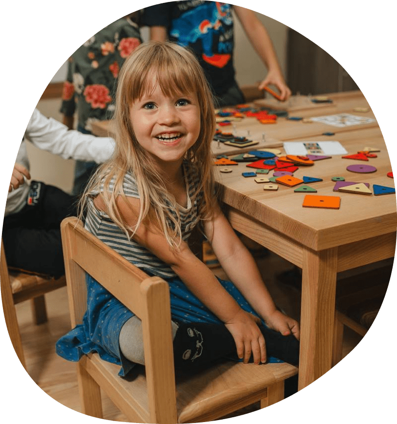
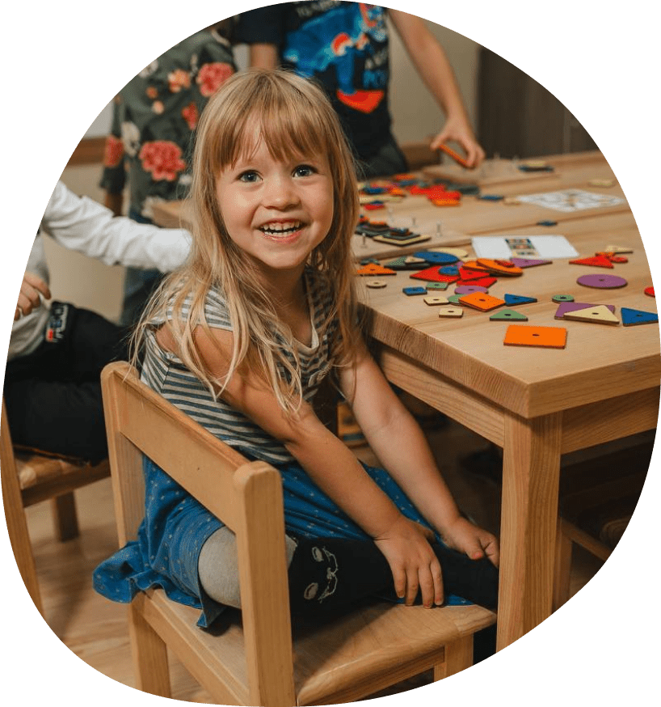

Про нас

Комфортний простір для дитини
- Ігровий майданчик
- Красиві та затишні приміщення
- Якісні іграшки та навчальні матеріали
- 5-разове харчування
Комфортний простір для дитини
- Заняття з фізкультури
- Прогулянки на свіжому повітрі
- Хореографія
- Спортивні розваги та квести


інтелектуальний розвиток
- Образотворче мистецтво та музика
- Математика, логіка та читання
- Англійська мова
- Пізнаємо світ та розвиток мовлення
вікові групи

маленькі розумники

маленькі дослідники

маленькі генії

pre-school
дитячий садок
-

Ми любимо нашу їжуі готуємо її з любовʼю до дітейподивитися меню
-

9 роківми працюємо з дітками
-

Наші працівники туттому-що люблять свою роботу та дітей

заняття у нашому садочку
математика

читання

пізнаємо світ

розвиток мовлення
образотворче мистецтво

англійська мова
лего конструювання

хореографія

музичні заняття

варіанти відвідування садочку
адаптаційний період
Адаптаційний період створений для батьків, які хочуть допомогти своїй дитині легше адаптуватися до нових умов. Зазвичай у цей період передбачено поступове збільшення часу перебування дитини в садку, що допомагає уникнути стресу і поступово вводить дитину в новий ритм життяВартість:
- 1 год - 100грн;
- 2 год - 200грн;
- 1 день до 13:00 - 280грн;
- 1 день до 13:00 з обідом - 380 грн;
міні-садочок
Наш тариф «Міні-садочок» для батьків, які бажають поступово адаптувати дитину до більш тривалого перебування в садочку або з власних міркувань бажають, щоб дитина відвідувала садок неповний день.
У цей тариф входить:- 3-разове харчування (сніданок, ланч та обід);
- 3 заняття щоденно;
- прогулянка;
- ігрова діяльність.
садочок
Створений для батьків, які бажають, щоб їхня дитина мала більше можливостей для взаємодії з однолітками та участі в організованих заняттях, що сприяють її соціальному та емоційному розвитку.
У цей тариф входить:- 4-разове харчування (сніданок, ланч, обід, полуденок);
- 4 заняття щоденно;
- прогулянка;
- ігрова діяльність.
садочок повного дня
Створений для батьків, які шукають структурований день для дитини: дитина отримає регулярний розпорядок дня, включаючи навчальні та ігрові заняття, що допомагає в її розвитку та соціалізації.
У цей тариф входить:- 5-разове харчування (сніданок, ланч, обід, полуденок, вечеря);
- 4 заняття щоденно;
- прогулянка;
- ігрова діяльність.
додаткові заняття та гуртки у Центрі розвитку дітей
підготовка до школи

логопед-дефектолог
мама+малюк

англійська мова

творчі майстер-класи
цікава субота
наша команда
ірина
Керівник. Досвід роботи - 18 років.
Ірина
Вихователь групи «Маленькі розумники», досвід роботи - 3 роки.
катерина

Вихователь групи «Маленькі дослідники», досвід роботи - 3 роки.
жанна

Вихователь групи «Маленькі генії», досвід роботи 3 роки.
галерея


Відгуки
Відвідували багато садочків але підхід до малечі змогли знайти саме тут. Лабораторія маленьких геніїв - це, в першу чергу, професійна команда відкритих та добрих людей , яка по-справжньому любить малечу. Команда, в якій панує затишна та гармонійна атмосфера і яка кожен день створює маленьке свято для них. Щиро раджу♥️♥️♥️♥️
Відвідуємо садочок вже 4 роки. Дуже задоволені. Дитина ходить з задоволенням щодня. Ще дуже крута підготовка до школи . Після занять в садочку не потрібно додаткових підготовок. Дитина читає, пише , вміє рахувати.
Зручне місце розташування. Комфортні умови для дітей. Хороші іграшки для самостійної гри. Та найцінніше те, що усі вихователі мають позитивний світогляд та ставляться до дітей як до маленьких особистостей, дають свободу для самовираження, та одночасно слідкують за дотриманням соціальних правил та норм. Атмосфера в садочку позитивна і це сприяє гармонійному розвитку дітей. Підготовка більше...